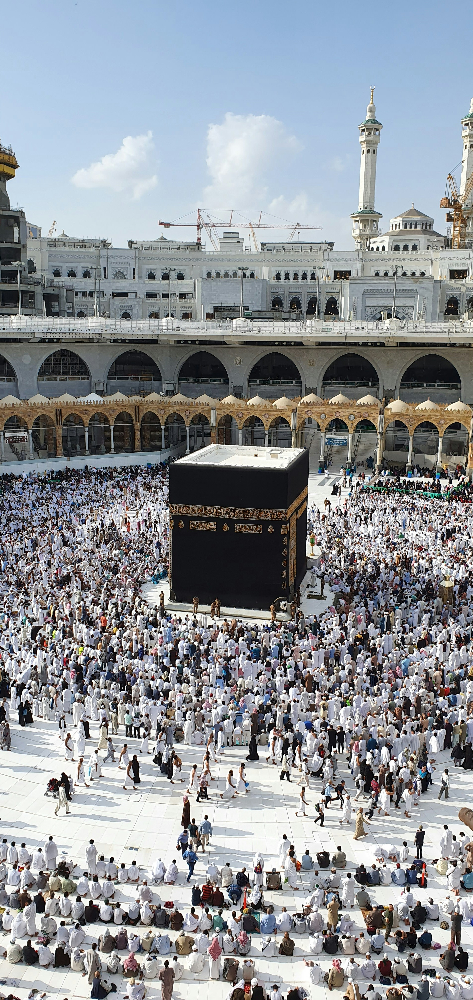
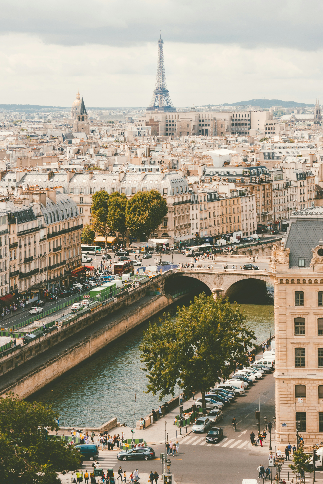

La Mecque
Ville sacrée entre toutes, La Mecque est le cœur spirituel de l'islam, une destination d'une profondeur incomparable.

Paris
Ville lumière par excellence, Paris envoûte par ses boulevards élégants, ses musées légendaires et cette atmosphère romantique qui n'appartient qu'à elle.

Morocco
Des médinas colorées aux dunes du Sahara, le Maroc envoûte par ses saveurs, ses couleurs et son art de vivre.

Guinée
Terre de cultures vibrantes et de paysages luxuriants, la Guinée révèle une Afrique authentique et chaleureuse.

Italie
Berceau de l'art et de la gastronomie, l'Italie offre à chaque coin de rue un chef-d'œuvre à contempler.

Cote D'ivore
Entre plages dorées et forêts tropicales, la Côte d'Ivoire rayonne par sa joie de vivre et sa richesse culturelle.

Japon
Entre temples millénaires et technologie futuriste, le Japon est un voyage entre deux mondes qui n'en forment qu'un.

New York
La ville qui ne dort jamais, New York fascine par son énergie unique, ses gratte-ciels et sa diversité culturelle.